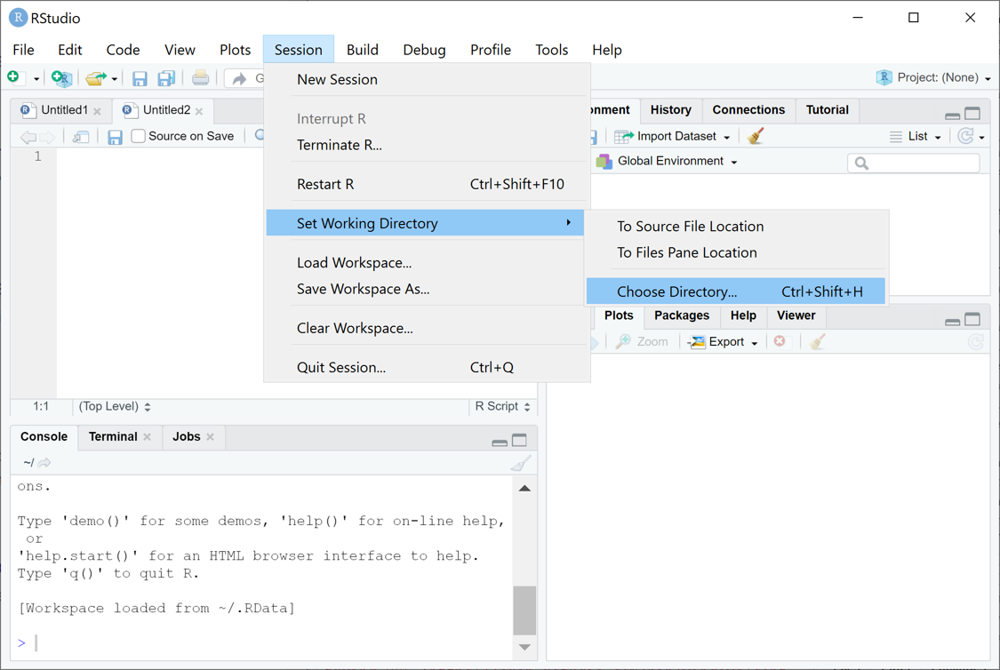
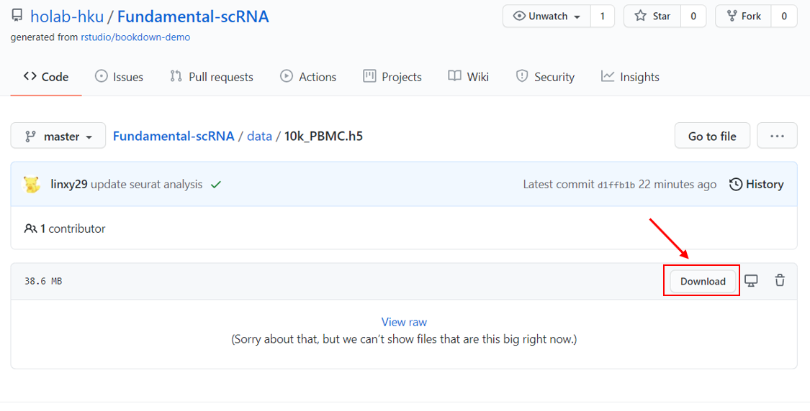
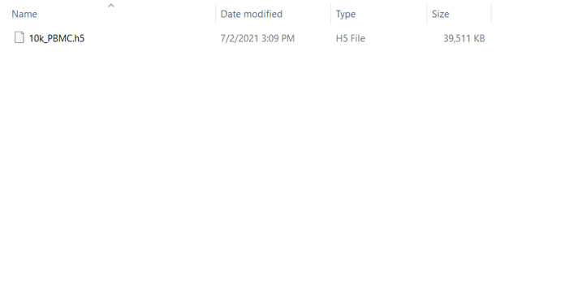

Fundamentals of scRNASeq Analysis
2021-06-28 (updated: 2021-07-02)
Prerequisites
This is the teaching material for Session 2: Fundamentals of scRNASeq Analysis of 2021 Single Cell Workshop.
Install packages
Some packages used in this material can be installed from CRAN:
Set working directory
Setting a working directory first helps us read and save data in an easier way. To set a working directory:
create a folder named “R-workshop” in your preferred directory
create a “data” folder in the
R-workshopfrom RStudio, use the menu to change your working directory under Session > Set Working Directory > Choose Directory
choose the directory to
R-workshop

Or you can type in the console:
setwd("/yourdirectory/R-workshop")For Windows, the command might look like :
setwd("c:/yourdirectory/R-workshop")Download data
Data used in this material is a 10k PBMC data getting from 10x Genomics website.
To prepare data for this workshop:
- download the
10k_PBMC.h5from: https://github.com/holab-hku/Fundamental-scRNA/blob/master/data/10k_PBMC.h5

put it in the
datafolder we create before.the
datafolder should be look like this:

Acknowledgement
Thanks everyone in Ho Lab who gives great comments/suggestions and contributes to this teaching material.